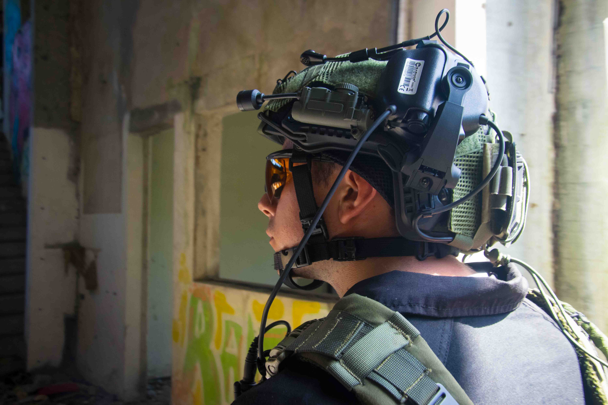
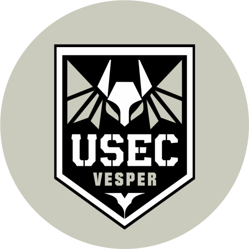
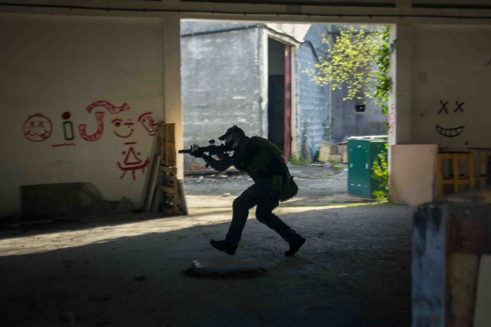
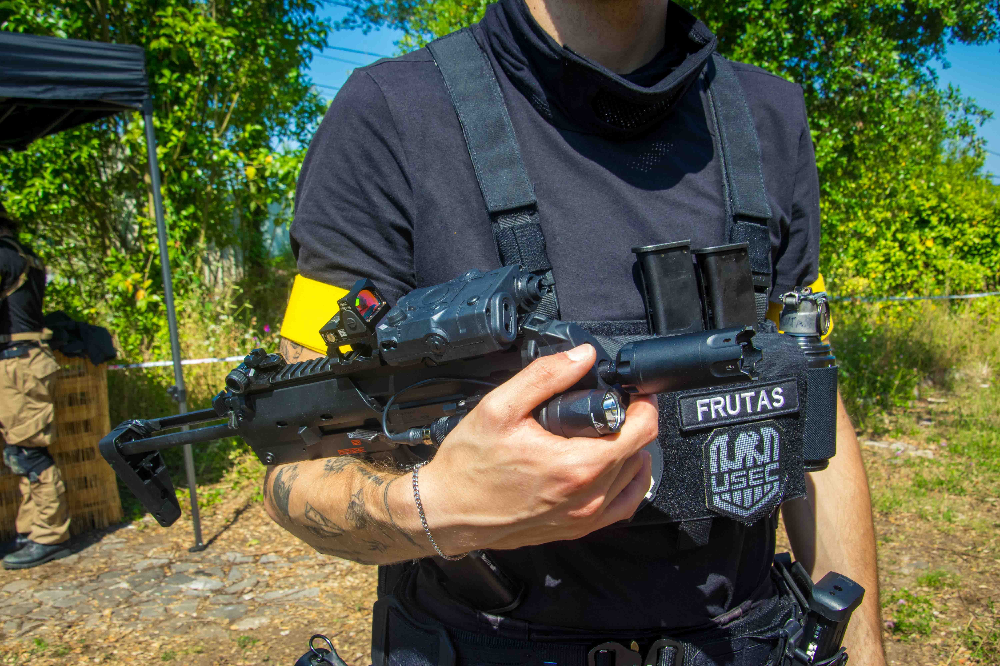
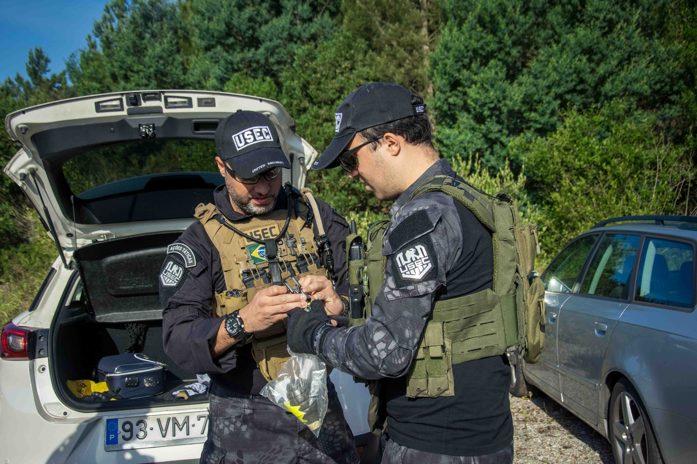

Before the first move.
Listen to the sector. Verify access. Understand what the briefing left out.

USEC VESPERCOIMBRA / EST. 2022PT ↗
USEC / COIMBRA / EST. 2022
We are Vesper. A USEC detachment on external operations, far from Tarkov and always on the move.
Meet the detachment ↓Nine operators, different equipment and trust built between assignments. Each brings their own way of working. Returning is everyone’s job.

Listen to the sector. Verify access. Understand what the briefing left out.

Unconventional weapons, individual styles and initiative for when the plan changes.

The objective matters. Who comes back with us matters more. The mission closes at the rally point.
02 / NO FIXED ADDRESS
We began in Coimbra in 2022. Souselas became our first meeting point. The field was not ours; the memories were.
Today we travel between contracts and temporary shelters, looking for somewhere new. Until then, Vesper goes where the assignment takes it.
THE STORY CONTINUES IN THE TERMINAL
Mission reports, field records and the routes that brought us here.